Engineering at Earendil
Armin Ronacher
Core Thesis
Build systems so that we have breathing room.
const key = `hits:${userId}:${minuteBucket(now)}`;
const [[_, hits]] = await redis.multi().incr(key).expire(key, 60, "NX").exec();
if (hits > 100) throw new TooManyRequests();
return { ok: true };const apply = {
"cart.add": (s, e) => ({ ...s, qty: s.qty + e.qty }),
"cart.remove": (s, e) => ({ ...s, qty: Math.max(0, s.qty - e.qty) }),
"cart.checkout": (s) => ({ ...s, checkedOut: true })
};
const next = events.reduce((s, e) => apply[e.type](s, e), prev);const event = { type: "invoice.generate", occurredAt: clock.now(), accountId };
const refTime = ctx.referenceTime ?? event.occurredAt; // never Date.now()
if (isMonthBoundary(refTime, account.tz)) {
await billing.createInvoice(accountId, refTime);
}await db.query("SELECT value FROM counters WHERE id=$1 FOR UPDATE", [id]);
await db.query("UPDATE counters SET value = value + 1 WHERE id=$1", [id]);
const idemKey = `idem:${key}`;
const cached = await redis.get(idemKey);
if (cached) return JSON.parse(cached);
const rv = await op(...args);
await redis.set(idemKey, JSON.stringify(rv), "EX", 86400);
return rv;function loadUser(id): User {
const [row] = db.query("SELECT * FROM users WHERE id = $1", [id]);
return {
id: row.id,
plan: row.plan ?? "free",
featureFlags: row.feature_flags ?? []
};
}const config = loadConfigFile("./config.json");
if (!validateConfig(config)) {
throw new Error("Fatal: invalid config, refusing to start");
}
startServer(config);The point is not perfect uptime.
The point is controllable failure.
Predictability creates confidence.
Confidence creates breathing room.